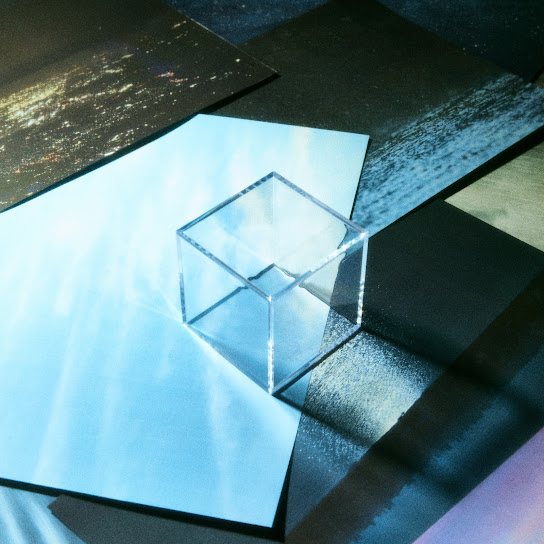

ATARAYO - クリスマスのよる
쿠리스마스노 요루
(크리스마스의 밤)

2nd - 季億の箱
키오쿠노 하코
(추억 상자)
街の灯りがやけに眩しい夜
마치노 아카리가 야케니 마부시이 요루
(도시의 불빛이 유난히 눈부신 밤)
今年もこの季節か
코토시모 코노 키세츠카
(올해도 이 계절이구나)
街に溶け込むことが出来ない僕は
마치니 토케코무 코토가 데키나이 보쿠와
(거리에 녹아들 수 없는 나는)
イヤホンの音量を上げる
이야혼노 온료-오 아게루
(이어폰 볼륨을 높여)
逃げる 世界から
니게루 세카이카라
(도망쳐 세상에서)
クリスマスの夜
크리스마스노 요루
(크리스마스의 밤)
甘ったるい光に囲まれて
아맛타루이 히카리니 카코마레테
(달콤한 빛에 둘러싸여)
涙なんか要らないってさ
나미다난카 이라나잇테사
(눈물 따윈 필요 없다고 하네)
君が僕に贈った笑顔でさえも
키미가 보쿠니 오쿳타 에가오데사에모
(네가 나에게 선물했던 미소조차도)
あれはサンタってやつの
아레와 산탓테 야츠노
(그건 산타라는 녀석의)
贈り物だったのかな
오쿠리모노 닷타노카나
(선물이었을까)
甘い甘い甘い甘いケーキなんて要らないからさ
아마이 아마이 아마이 아마이 케-키난테 이라나이카라사
(달고 달고 달고 단 케이크 따윈 필요 없으니까)
ぬるい珈琲を「冷めてしまったね」なんて
누루이 코-히-오「사메테 시맛타네」난테
(미지근한 커피를 "식어버렸네" 라며)
笑いながら一緒に味わうそんな日々を
와라이나가라 잇쇼니 아지와우 손나 히비오
(웃으면서 함께 맛보는 그런 나날들을)
大事にしたかった
다이지니 시타캇타
(소중히 하고 싶었어)
愛という名の孤独を持って
아이토 이우 나노 코도쿠오 못테
(사랑이라는 이름의 고독을 안고)
今年も眠りにつくから
코토시모 네무리니 츠쿠카라
(올해도 잠들 테니)
孤独の味に飽き飽きした夜は
코도쿠노 아지니 아키아키시타 요루와
(고독의 맛에 질릴 대로 질린 밤은)
どこか悲しくなって
도코카 카나시쿠 낫테
(어딘가 슬퍼져서)
逃げたくなるよ 誰もいない世界へ
니게타쿠 나루요 다레모 이나이 세카이에
(도망치고 싶어져 아무도 없는 세상으로)
好きな小説だけ持って
스키나 쇼-세츠 다케 못테
(좋아하는 소설만 가지고)
行くんだ 今から
유쿤다 이마카라
(갈 거야 지금부터)
クリスマスの夜
크리스마스노 요루
(크리스마스의 밤)
甘ったるい光に囲まれて
아맛타루이 히카리니 카코마레테
(달콤한 빛에 둘러싸여)
涙なんか要らないってさ
나미다난카 이라나잇테사
(눈물 따윈 필요 없다고 하네)
君が僕に贈った笑顔でさえも
키미가 보쿠니 오쿳타 에가오데사에모
(네가 나에게 선물했던 미소조차도)
あれはサンタってやつの
아레와 산탓테 야츠노
(그건 산타라는 녀석의)
贈り物だったのかな
오쿠리모노 닷타노카나
(선물이었을까)
甘い甘い甘い甘いケーキなんて要らないからさ
아마이 아마이 아마이 아마이 케-키난테 이라나이카라사
(달고 달고 달고 단 케이크 따윈 필요 없으니까)
ぬるい珈琲を「冷めてしまったね」なんて
누루이 코-히-오「사메테 시맛타네」난테
(미지근한 커피를 "식어버렸네" 라며)
笑いながら一緒に味わうそんな日々を
와라이나가라 잇쇼니 아지와우 손나 히비오
(웃으면서 함께 맛보는 그런 나날들을)
大事にしたかった
다이지니 시타캇타
(소중히 하고 싶었어)
愛という名の孤独を持って
아이토 이우 나노 코도쿠오 못테
(사랑이라는 이름의 고독을 안고)
今年も眠りにつくから
코토시모 네무리니 츠쿠카라
(올해도 잠들 테니)
こんな夜にはきっと
콘나 요루니와 킷토
(이런 밤에는 분명)
都合よくサンタなんか信じちゃって
츠고-요쿠 산타난카 신지챳테
(형편 좋게 산타 같은 걸 믿어버리고)
来ないと知りながら
코나이토 시리나가라
(오지 않을 걸 알면서도)
悲しくなんだよ
카나시쿠 난다요
(슬퍼진단 말이야)
あぁ 美しくなくていい
아- 우츠쿠시쿠 나쿠테 이이
(아- 아름답지 않아도 돼)
美しくなくていいから
우츠쿠시쿠 나쿠테 이이카라
(아름답지 않아도 되니까)
せめてこの夜を愛せるほどの器量を
세메테 코노 요루오 아이세루 호도노 키료-오
(적어도 이 밤을 사랑할 수 있을 정도의 도량을)
僕にくれたらいいと思うんだ
보쿠니 쿠레타라 이이토 오모운다
(나에게 준다면 좋겠다고 생각해)